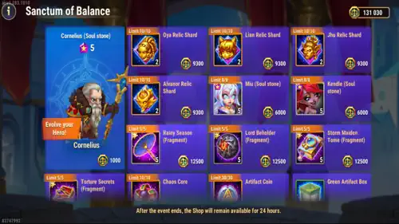

Sanctum of Balance Shop Guide for Hero Wars Alliance
- By: Alexandre Domingos. .
The Sanctum of Balance Shop is one of those event shops where a player can either make a beautiful long-term decision or burn valuable coins on things that only feel useful for one day. My view is simple: during the Balance of Power event group, your Balance Sigils should chase rare progress first, not easy farmable gear.
This shop opens with the Balance of Power event group, usually in the second week of the season. The event runs from Monday to Sunday, and Sunday is the last event day to earn and spend with the event active. The shop normally stays open for another 24 hours after the event ends, but I do not like leaving decisions for the last minute. Spend with a plan, because Balance Sigils disappear faster than they look.

How to Earn Balance Sigils
You spend in this shop with Balance Sigils, the event coins earned across the Balance of Power event group. The good part is that you are not limited to one source. You can earn a strong amount by completing missions in the event group and also through the brawl-style event, where attacks and defenses can both give coins.
This is why I always say: prepare before the event begins. Energy, emeralds, Summoning Spheres, Skin Stones, Rune Stones, Elemental Spheres, Tower Chests, Arena battles, Titanite, VIP Points, Soul Stones, and boss defeats can all matter depending on the event mission. If you arrive empty, the shop feels expensive. If you arrive prepared, the shop becomes an opportunity.
Best Sanctum of Balance Shop Priorities

For me, the heart of this shop is the Relic Shards. The shop offers Relic Shards for Oya, Lian, Jhu, and Alvanor, but I would not treat them all with the same urgency.
- Oya Relic Shards - my first priority: Oya fits perfectly with Tristan and critical teams. If your account plays Honor, crit pressure, or Tristan combinations, Oya's relic progress is the kind of upgrade that keeps paying you back in PvP.
- Lian Relic Shards - my second priority: Lian is one of those heroes who can be useful even without absurd power. Her control can change battles, and that makes her relic shards valuable for players who like flexible defense and tricky matchups.
- Jhu Relic Shards - my third priority: Jhu is excellent for Hydras, rally bosses, and Realm monsters. My Jhu can delete bosses and monsters with a single hit when the setup is right. Even though his relic increases Health and Physical Attack, my practical tip is still to focus heavily on Armor Penetration for Jhu so his damage actually breaks through.
Each of these relic shard purchases has a 10/10 limit. Each purchase gives 2 hero Relic Shards and costs 9,300 Balance Sigils. In other words, buying all 10 purchases for one hero gives you 20 Relic Shards.
Tristan Is the Featured Hero
The featured hero of the event is Tristan, and he also received relic improvements during this event cycle. That matters because Tristan is not just another Honor hero; he is one of the heroes who can make an entire physical lineup feel sharper, especially when paired with heroes who benefit from faster pressure and armor reduction.
If you are building around Tristan, do not look at this shop in isolation. Oya's relic value becomes even better because she has natural synergy with Tristan and critical teams. You can also earn some Tristan Soul Stones from Balance of Power missions, so use the event as a full roster push, not only as a shop visit. For the full build, check my Tristan guide with relics.
Soul Stones: Cornelius, Miu, and Kendle
The shop also has Soul Stones, but here I would be more selective. Cornelius Soul Stones are available without a purchase limit, but unlike Miu and Kendle, Cornelius can also be farmed in the Hydra Shop. That sounds easy until you remember the Hydra Shop is already under pressure from important long-term resources like Elemental Spheres, Artifact Coins, and Chaotic Cores.
My opinion: Cornelius is useful, but do not blindly spend all your Balance Sigils there. Miu and Kendle Soul Stones are more event-limited, usually appearing in events and the Heroic Chest, so their shop value can be higher if you are actively building them. Miu and Kendle have an 8/8 limit, each purchase gives 5 Soul Stones, and each purchase costs 6,000 Balance Sigils.
Artifact Fragments Worth Considering
After the relic priorities, I like the artifact fragments for Kendle and Miu, especially their book and weapon fragments. These are limited to 5/5 purchases, each purchase gives 5 fragments, and each one costs 12,500 Balance Sigils.
This is not cheap, so I would buy them only after deciding your real direction. If Miu or Kendle is part of your main plan, artifact fragments are meaningful. If they are just collection heroes on your account, relic shards for Oya, Lian, or Jhu usually feel better.
Balance of Power Event Group
The Balance of Power event group focuses on upgrading Honor Heroes while giving valuable resources for your entire roster. The shop is only one side of the event; the real power comes from completing missions across all three connected events and turning those missions into more Balance Sigils.
Defiant Edge
Rewards: Event Coins, Orm Soul Stones, Alecto Soul Stones, Artifact resources, Recurve Bow red item fragments, and other valuable rewards.
Complete quests by: logging in, spending Energy, using Summoning Spheres and Skin Stones, fighting in the Arena, earning VIP Points, and defeating Bosses as the Rally Leader.
Unbroken Bond
Rewards: Miu Soul Stones, Kendle Soul Stones, Alecto Soul Stones, Orm Soul Stones, Recurve Bow red item fragments, Artifact resources, and more.
Complete quests by: logging in, earning VIP Points, spending Emeralds, Rune Stones, and Elemental Spheres, opening Tower Chests, earning Titanite, and collecting Hero Soul Stones.
Gear & Glory
Rewards: Tristan Soul Stones, Tristan's Artifact, his unique red item, Solar Skin+, Dark Depths Skin, Talisman of Blessing, and additional rewards.
Complete quests by: upgrading Tristan's Level, Rank, Gift of the Elements, Glyphs, Artifact Level, and Artifact Star Rank, while also completing quests from Defiant Edge and Unbroken Bond.
What I Would Leave for Last
Artifact Coins, Chaotic Cores, artifact boxes, and similar resources are useful, but in this shop I leave them after the premium targets. They are not bad purchases; they are just not the reason I get excited about this shop.
Equipment items are the purchases I like the least. In most cases, it is better to farm gear with Energy, because Energy also helps you complete event missions and gives extra account progress along the way. Spending Balance Sigils on farmable equipment feels like trading rare currency for convenience.
My Final Shop Order
| Priority | Item | My Opinion |
|---|---|---|
| 1 | Oya Relic Shards | Best first buy for Tristan, Honor, and critical teams. |
| 2 | Lian Relic Shards | Great control value, useful even when she is not your highest-power hero. |
| 3 | Jhu Relic Shards | Excellent for Hydra, rally bosses, and Realm monsters. |
| 4 | Miu and Kendle Soul Stones | Good if you are building them, because they are harder to farm regularly. |
| 5 | Miu and Kendle Artifact Fragments | Strong, but expensive. Buy only for heroes in your real plan. |
| Last | Artifact Coins, Chaotic Cores, Boxes | Useful resources, but not above the rare relic and hero progress. |
| Avoid | Equipment Items | Farm them with Energy and complete event missions at the same time. |
My final take: if you leave this event with Oya, Lian, or Jhu relic progress, you did something valuable. If you also prepared resources and completed missions across the whole Balance of Power group, the Sanctum of Balance Shop becomes one of the better long-term shops of the season.
Explore new skills with our featured guides!


Leave Your Opinion!
Did you like our Sanctum of Balance Shop Guide? Is there something you didn't understand or would like to suggest changes to? We invite you to join our comment section on the Alexandre Games Blog page. Feel free to express your opinion, clarify your doubts, and share your suggestions.
Click the button below to get started: